Container Escape Telemetry, Part 1: Isolation Primitives and the eBPF Observability Model
Before you can detect a container escape, you need to understand what's being escaped. This post covers the Linux isolation primitives that containers rely on, why they break, and how eBPF-based security tools observe those breakdowns at the kernel level.
This is Part 1 of the container escape telemetry series. The series overview has the project goals, key findings, and reading guide. If you’re already comfortable with namespaces, cgroups, capabilities, and how eBPF ring buffers work, skip ahead to Part 2: Methodology and Tool Architecture.
This post is the primer. It covers what containers actually are at the kernel level, what “escape” means in concrete terms, and how eBPF-based tools get telemetry out of the kernel. That last part matters more than you might think, because the mechanism that delivers telemetry to your security tool has its own failure modes, and an attacker who understands those failure modes can exploit them.
What Containers Actually Are
Containers are not virtual machines. There’s no hardware emulation, no separate kernel. A containerized process is still just a Linux process. It shares the host kernel and is isolated using a combination of kernel features layered on top. As Luca Vallini puts it well, containers were never intended to be a security boundary – they’re a packaging and resource management abstraction. The isolation mechanisms they rely on – namespaces, cgroups, and capabilities – were designed for resource partitioning, not for containing adversarial code.
That distinction matters for this entire series because every escape technique we’ll look at exploits the gap between “isolation for convenience” and “isolation for security.”
Namespaces
Namespaces are the kernel’s isolation primitive. Each namespace type gives a process its own view of a specific system resource. Linux currently supports eight namespace types:
- Mount – what filesystems you can see
- PID – what process IDs you can see
- Network – what network interfaces and routing tables you can see
- UTS – what hostname you think you have
- IPC – what shared memory and message queues you can access
- User – what uid/gid you think you are
- Cgroup – what cgroup hierarchy you can see
- Time – what the system clock reads
When you docker run a container, Docker calls clone() with a combination of namespace flags, and the new process gets its own isolated view of each resource.
Three syscalls dominate escape telemetry: clone() (create a new process with new namespaces), unshare() (move the current process into new namespaces), and setns() (join an existing namespace). These show up constantly because escaping a container almost always involves either creating new namespaces with elevated privileges or joining the host’s namespaces directly.
Here’s what that looks like concretely. When you see setns() called four times in rapid succession from a container-namespaced process targeting PID 1’s namespace file descriptors, that’s nsenter doing exactly what it’s designed to do, and it’s almost certainly an escape. The four calls correspond to joining the host’s mount, UTS, IPC, and PID namespaces in sequence. Every eBPF-based security tool can observe these calls. The difference between tools is how much context they attach to each observation – do you get just the syscall name, or do you also get the namespace type flags, the source and target namespace inodes, the calling process’s credential set, and its full ancestry chain? That context is what separates a useful detection signal from noise.
Cgroups
Cgroups (control groups) handle resource limits and accounting: how much CPU, memory, I/O, and other resources a process can consume. They’re organized as a filesystem hierarchy, which is both elegant and the source of one of the oldest container escapes.
The cgroup v1 release_agent mechanism allows you to specify a program that the host kernel executes when the last process in a cgroup exits. Felix Wilhelm demonstrated in 2019 that if you can mount the cgroup filesystem from inside a privileged container, write to release_agent, and trigger it, you’ve achieved arbitrary code execution on the host. The telemetry signature is a very specific sequence: mount("cgroup"), then mkdir (create child cgroup), then write(notify_on_release), then write(release_agent), then write(cgroup.procs). Each step is a separate syscall, and missing any one of them in your telemetry means you either can’t detect the escape or you’ll generate false positives on the individual operations that are benign in isolation.
Cgroup v2, which merged the separate v1 hierarchies into a unified tree, removed the release_agent mechanism entirely. But cgroup v1 is still the default on many production systems, and Docker’s --privileged flag grants the CAP_SYS_ADMIN capability needed to mount it. Palo Alto’s Unit 42 documented CVE-2022-0492, a variant that allowed even unprivileged containers to exploit the same mechanism under certain kernel configurations. This is why we still care about this attack in 2026.
Capabilities
Linux capabilities break the traditional root/non-root binary into granular permissions. There are currently over 40 distinct capabilities, but CAP_SYS_ADMIN is the big one for container escapes. It’s required for mounting filesystems, manipulating namespaces, loading kernel modules, using ptrace, and a long list of other privileged operations. The kernel man page itself warns developers that CAP_SYS_ADMIN can “plausibly be called the new root” because of its scope.
A properly configured container drops most capabilities, but “privileged” containers (the --privileged flag in Docker) get all of them. And even without --privileged, teams frequently over-grant capabilities like CAP_SYS_PTRACE, CAP_NET_RAW, or CAP_SYS_ADMIN individually because their application needs one specific operation and the capability system bundles too many operations together.
The telemetry around capability checks turns out to be one of the more useful signals for distinguishing exploit activity from normal container behavior. Tetragon’s cap_capable kprobe fires every time the kernel evaluates a capability check, with the specific capability name decoded. Tracee’s commit_creds event fires when a process’s credential structure changes, which is what happens when a kernel exploit overwrites the cred struct to grant itself root. These are different abstraction levels for observing the same underlying phenomenon: something in a container is doing things that require privileges it may or may not legitimately have.
What “Escape” Means in Telemetry Terms
With this framing, a container escape is any action that crosses an isolation boundary: joining the host’s namespaces, mounting the host’s filesystems, writing to cgroup control files that the host kernel acts on, or exploiting kernel vulnerabilities to corrupt memory and modify credentials. Every escape technique in this research maps to one or more of these boundary violations, and the telemetry each tool generates is fundamentally about observing those violations at the kernel level.
The question isn’t whether an escape happened. It’s what kernel-level evidence the escape left behind and whether your tooling captured it.
But there’s a prerequisite to that question that most discussions skip: how does the telemetry get from the kernel to your security tool in the first place? And what happens when that mechanism fails?
How eBPF Security Tools See the Kernel
All three tools in this research (Tetragon, Falco, and Tracee) use eBPF to observe kernel activity. eBPF lets you attach small programs to kernel functions, tracepoints, and LSM hooks. When the kernel executes the hooked function, your eBPF program runs, collects whatever data you’ve asked for, and writes it to a buffer that a userspace program reads.
That buffer is the critical infrastructure. Everything your security tool knows about what’s happening on the system flows through it. And it has a fundamental constraint: it’s finite.
The Ring Buffer
There are two buffer types in use. The older mechanism is the perf buffer (BPF_MAP_TYPE_PERF_EVENT_ARRAY), which creates one ring buffer per CPU. The newer mechanism is the BPF ring buffer (BPF_MAP_TYPE_RINGBUF, introduced in kernel 5.8 by Andrii Nakryiko), which creates a single shared buffer across all CPUs.
The per-CPU model has a fragmentation problem that Nakryiko identified as a key motivation for the new design. If CPU 0 is handling a burst of syscalls from an escaping container while CPUs 1-3 are idle, CPU 0’s buffer can overflow while the other buffers sit empty. The shared ring buffer model solves this by letting any CPU write to the same buffer, so idle capacity on one CPU absorbs bursts from another.
In the tools we tested:
- Tetragon uses the BPF ring buffer (shared, 64 MB in our config)
- Falco (modern_ebpf driver) uses the BPF ring buffer, one per 2 CPUs by default
- Tracee uses perf buffers (per-CPU, 4 MB per CPU by default)
This distinction matters under load, and we’ll see exactly how much it matters when we get to the syscall flood stress test results later in the series.

What Happens When the Buffer Is Full
Both buffer types default to a drop-newest policy in the security tool context. When the buffer is full, new events are silently discarded rather than blocking the kernel. (Perf buffers can technically be configured to overwrite old data, but none of the three tools in this research use that mode – losing the most recent event is preferable to silently discarding old events that may already be referenced downstream.) The kernel can’t block or sleep waiting for userspace to drain the buffer because eBPF programs run in a non-sleepable context.
This means there’s a race condition at the heart of every eBPF security tool: the kernel is writing events into the buffer, and a userspace program is reading them out. If the kernel produces events faster than userspace consumes them, events are lost. The security tool never sees them. There’s no retry, no backpressure, no “please hold.” The events are simply gone.
Each tool handles this differently:
Tetragon increments a BPF-side counter when bpf_ringbuf_output() fails and exposes it via Prometheus metrics (tetragon_ringbuf_perf_event_lost_total). It also logs a periodic summary: received=N lost=N errors=N. In our testing across 15 scenarios, Tetragon reported lost=0.
Falco has per-category drop counters. When drops exceed a threshold, it emits an internal alert: “Falco internal: syscall event drop. N system calls dropped in last second.” Critically, Falco tracks drops per syscall category (e.g., n_drops_buffer_clone_fork_exit, n_drops_buffer_open_enter/exit), which tells you whether the drops are in security-critical categories or just file I/O noise.
Tracee logs "Lost %d events" at warn level when its perf buffer consumer detects missed events. With the METRICS=1 build flag, it exposes per-event-type submit attempt and failure counts. Tracee also has a separate control-plane buffer for essential process tracking events, added specifically to prevent high-frequency traced events from drowning process lifecycle data.
Why This Matters for Detection
Under normal conditions, none of this matters. In our testing, all three tools reported zero event loss running the 14 sequential scenarios S01-S14 (excluding the S15 stress test, which deliberately induces buffer pressure). The buffer sizes are configured for the common case, and the common case doesn’t produce enough events to fill them.
But the common case isn’t what keeps detection engineers up at night. The adversarial case is.
A container process can generate millions of cheap syscalls per second. getpid() in a tight loop runs at over 8 million calls per second on commodity hardware. openat("/dev/null") runs at over 100,000 per second including the overhead of actual file descriptor operations. If any of those syscalls match a hook in your security tool’s eBPF program, each one generates an event that enters the buffer.
An attacker who understands this can deliberately flood syscalls to fill the ring buffer, causing the security tool to drop subsequent events – including the events from the actual escape happening concurrently in a different container. This maps to MITRE ATT&CK T1562.001 (Impair Defenses: Disable or Modify Tools) and T1562.006 (Impair Defenses: Indicator Blocking).
The defenses against this vary by architecture:
In-kernel filtering is the structural mitigation. If an event doesn’t match your policy, it never enters the buffer. Tetragon’s TracingPolicy model is the strongest example of this: if you haven’t written a policy that matches openat on /dev/null, the flood generates exactly zero events. The buffer never sees it.
Buffer prioritization is the middle ground. Falco’s modern_ebpf driver drops events by category under pressure, prioritizing process lifecycle events (execve, clone/fork) over file operations (open, close). An attacker can drown out file access telemetry, but the tool still sees new processes being spawned – including the one running nsenter.
Broad hook coverage without prioritization is the vulnerability. If your tool hooks security_file_open on all file opens and doesn’t prioritize which events survive buffer pressure, a sustained openat flood can push security-critical events out of the buffer. The tool faithfully records millions of /dev/null opens while the concurrent namespace escape disappears into the gap.
We tested this directly with a dedicated stress-test scenario (S15 in the series), and the results were striking. But the specifics belong in the per-tool analysis. The point for this post is: the buffer mechanism that delivers kernel telemetry to your security tool is not a passive conduit. It’s an attack surface. Understanding how it works, and how it fails, is a prerequisite for trusting what your tools tell you.
What Comes Next
With this foundation, the rest of the series digs into what actually happened when we ran 15 escape scenarios against Tetragon, Falco, and Tracee. Part 2 covers the lab setup, tool architectures, and the full detection coverage matrix. Part 3 is the per-scenario deep dive: what each tool captured (or missed), why, and what the telemetry actually looks like. Part 4 covers volume, signal-to-noise, and deployment recommendations. Part 5 covers the practical tuning work: what ships by default, what you have to build yourself, and what breaks along the way. Part 6 maps the lab findings against TeamPCP, a real threat actor using these exact techniques in the wild right now.
If you’re a detection engineer working in the container security space, you’ll get the most value from reading the whole series. But each post is designed to stand on its own. If you already know this material cold, skip to the part that interests you.
References and Further Reading
Kernel Documentation
namespaces(7)man page – the authoritative reference for Linux namespace types, semantics, and/proc/pid/ns/interfaceclone(2),unshare(2),setns(2)– the three namespace syscalls that dominate escape telemetrycgroups(7)man page – covers both v1 and v2 cgroup hierarchies- Control Group v1 kernel docs –
release_agentandnotify_on_releasemechanism - Control Group v2 kernel docs – the unified hierarchy that removed
release_agent capabilities(7)man page – the full list of Linux capabilities and what each permits- CAP_SYS_ADMIN: the new root (LWN.net, 2012) – Jake Edge’s article on the scope creep of
CAP_SYS_ADMIN
Container Escape Research
- Understanding Docker container escapes (Trail of Bits, 2019) – covers Felix Wilhelm’s cgroup release_agent PoC
- Privileged Container Escape - Control Groups release_agent (Alex Chapman, 2020) – detailed walkthrough of the release_agent technique
- CVE-2022-0492: New Linux Kernel cgroups Vulnerability (Palo Alto Unit 42, 2022) – the unprivileged cgroup escape variant
- Containers Are Not a Security Boundary (Luca Vallini) – a clear explanation of why container isolation was never designed for adversarial workloads
- Making Containers More Isolated: An Overview of Sandboxed Container Technologies (Palo Alto Unit 42) – gVisor, Kata Containers, and Firecracker as alternatives when containers aren’t enough
eBPF and Ring Buffers
- Andrii Nakryiko, “BPF ring buffer” – the canonical design document for
BPF_MAP_TYPE_RINGBUF - BPF ring buffer kernel docs – the official kernel documentation for the ring buffer API
- Brendan Gregg, BPF Performance Tools (Addison-Wesley, 2019) – the reference on buffer sizing and performance characteristics
- Falco: Understanding Dropped Events – Falco’s documentation on buffer pressure behavior and per-category drop counters
- Rex Guo & Junyuan Zeng, “Phantom Attack: Evading System Call Monitoring” (DEF CON 29, 2021) – a related but distinct evasion technique (TOCTTOU on syscall arguments)
Docker Security
- Docker seccomp security profiles – default seccomp profile and capability dropping behavior
- Docker runtime privilege and Linux capabilities – what
--privilegedactually grants
LLM Disclosure
Claude (Anthropic) was used throughout this project to assist with lab setup and automation, telemetry analysis and correlation, and authoring this blog series.